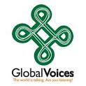
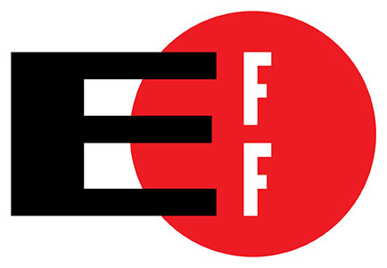
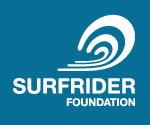
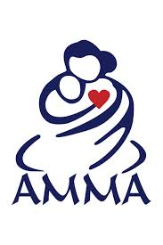
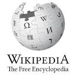

Democracy
 Environment
Spirit
Content

Project Gutenberg Literary Archive Foundation
809 North 1500 West
Salt Lake City, UT 84116
501(c)(3), EIN: 64-6221541
809 North 1500 West
Salt Lake City, UT 84116
501(c)(3), EIN: 64-6221541
300 Funston Avenue
San Francisco, CA 94118
501(c)(3), EIN: 94-3242767